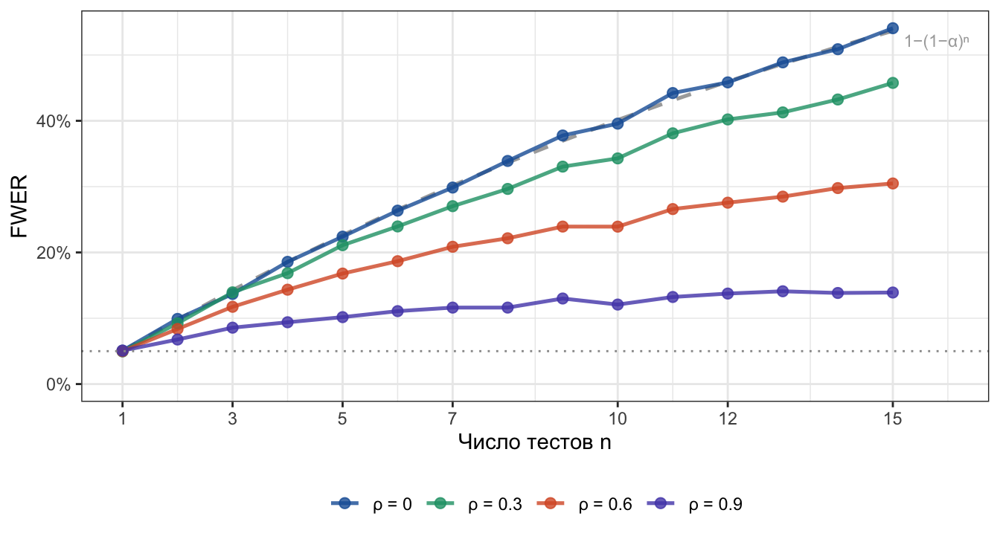
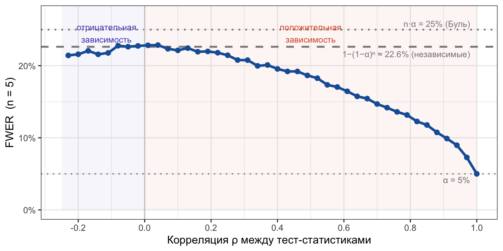

Симуляция FWER: почему 1−(1−α)ⁿ — верхняя граница, а не точное значение
statistics
simulation
ab-testing
multiple-testing
Author
Elena U
Published
June 18, 2026
В прошлый раз в большом посте про поправки на множественное тестирование разбирали теорию поправок и сравнивали их между собой. Сам пост субъективно считаю одним из лучших за все время 😎, но в нем остался нераскрытым вопрос, а как рассчитать FWER (Family-Wise Error Rate) для зависимых тестов. Напомню, что по формуле можно только оценить верхнюю границу.
Пример ситуаций, когда тесты зависимы:
Мы проводим A/B тест на несколько метрик. Тесты зависимы, потому что метрики собираются на одних и тех же пользователях.
Мы проводим A/B/C тест (или еще больше групп, хотя целесообразность таких тестов под вопросом), сравниваем попарно каждую группу с каждой. Тесты зависимы, так как одна и та же группа участвует в нескольких тестах.
Как видите, примеры максимально жизненные, поэтому было бы очень интересно проанализировать, а какие будут значения FWER в этом случае. Давайте разбираться!
Note
FWER – групповая вероятность ошибки I рода. Другими словами — это вероятность совершить хоть одну ошибку первого рода в нескольких тестах.
Независимые тесты: классическая формула
Если проводить \(n\) независимых тестов, с заданным уровнем \(\alpha\), вероятность хотя бы одного ложного открытия:
Теоретический FWER при независимых тестах (α = 0.05)
Здесь приведена визуализация теоретического расчета FWER. Наверняка похожий драматичный график вы видели во многих материалах по множественному тестированию (да и в моем прошлом посте было похожее). В этот момент авторам обычно нужно испугать читателя цифрами: при 15 независимых тестах FWER превышает 50%, а для 100 тестов он стремится к значениям выше 99%!
Самый простой способ корректировать FWER – использовать поправку Бонферрони, поделить \(\alpha\) на количество тестов n (или домножить каждое p-value на n). При таком подходе мы хорошо контролируем FWER, однако сильно завышаем вероятность ошибки второго рода, следовательно, уменьшаем мощность теста.
Однако на практике тесты редко бывают абсолютно независимыми. Прежде чем смотреть на симуляции, разберёмся, какая бывает зависимость и как она влияет на FWER.
Положительная и отрицательная зависимость тестов
Положительно зависимые тесты — статистики тестов имеют тенденцию «двигаться вместе»: если из-за случайного шума один тест уходит в экстремальную зону (ложное отклонение), другие тесты склонны повторять это движение и отклоняться в ту же сторону. Ложные срабатывания приходят «пакетом» из одного и того же случайного шума, а не независимо друг от друга.
Примеры из A/B-тестирования:
ARPU и ARPPU измеряются на одних пользователях, доход на одного пользователя и доход на платящего жестко связаны. Случайный аномальный заказ (шум) сдвинет обе метрики в одну сторону, из-за чего они ложно отклонят \(H_0\) в одном и том же эксперименте.
Несколько вариантов vs один контроль – все тест-статистики делят между собой одну контрольную группу. Случайный шум в контроле автоматически сдвигает все результаты параллельно друг другу.
Следствие для FWER: Можно сказать, что ложные срабатывания собираются внутри одних и тех же итераций эксперимента. В одной серии тестов ложно прокрасятся сразу несколько метрик, а в других сериях — ни одной. Ну а поскольку при расчете FWER рассчитывается хоть одно ложное отклонение нулевой гипотезы (неважно, была ошибка одна или пять сразу), то финальный FWER будет ниже, чем в независимом случае.
Отрицательно зависимые тесты — напротив, это ситуация, когда случайный шум распределяется так, что ложные срабатывания в разных тестах склонны исключать друг друга и рассредотачиваться. В продуктовой аналитике отрицательная зависимость случайного шума встречается редко.
Истинная отрицательная зависимость шума (в условиях \(H_0\), когда фича ни на что не повлияла) возникает, например, при тестировании долей в закрытых системах:
Допустим, мы делим пользователей на три взаимно исключающих сегмента: «Купили подписку», «Купили разовый товар» и «Ничего не купили». Сумма их долей всегда равна 100%.
Если в тесте из-за чистого случайного шума резко подскочила доля тех, кто «Ничего не купил», то доли двух других сегментов математически обязаны пойти вниз.
Следствие для FWER: При отрицательной зависимости ложные срабатывания распределяются по разным тестам максимально «эффективно» (если из-за шума не ошибся первый тест, то порожденный им же противоположный шум сильно увеличивает шанс ошибки во втором тесте). То есть вероятность, что хоть один тест ложно выстрелит становится выше. Поэтому FWER может превышать \(1-(1-\alpha)^n\) и для отрицательно зависимых тестов эта формула перестаёт быть верхней границей, и гарантию даёт только неравенство Буля (\(n\alpha\)).
NoteЗдесь важно не смешивать два разных утверждения о границах FWER.
Неравенство Буля (принцип субаддитивности) работает при любой структуре зависимостей:
\[
FWER \;\leq\; \sum_{i=1}^n P(A_i) = n\alpha
\]
Это универсальная линейная граница — именно из неё вытекает поправка Бонферрони.
Формула\(1-(1-\alpha)^n\) — это точное значение FWER для независимых тестов (на этом строится чуть менее консервативная поправка Шидака). Она всегда не превышает \(n\alpha\):
\[
1-(1-\alpha)^n \;\leq\; n\alpha
\]
Для положительно зависимых тестов справедливо более сильное утверждение: независимый случай является верхней границей для зависимого. Только при PRDS работает вся цепочка:
Фактический FWER при положительной зависимости лежит ниже кривой независимого случая (увидим на симуляциях), что делает поправки Бонферрони и Шидака избыточно консервативными.
При отрицательной зависимости первое неравенство может нарушаться — FWER способен выйти за \(1-(1-\alpha)^n\), и тогда гарантию даёт только граница Буля \(n\alpha\).
Модель зависимости
Будем моделировать равнокоррелированные тест-статистики через общий фактор:
Тогда \(\text{Corr}(Z_i, Z_j) = \rho\) для всех \(i \neq j\).
\(\rho = 0\): независимые тесты, FWER \(= 1-(1-\alpha)^n\) (в точном соответствии с формулой)
\(\rho \to 1\): все тесты идентичны, FWER \(= \alpha\) (ошибка первого рода не растет)
Note
Равнокоррелированная структура (\(\text{Corr}(Z_i, Z_j) = \rho\) для всех пар) хорошо описывает случай нескольких метрик на одних пользователях — там один общий шум генерирует похожую корреляцию между всеми парами.
Для попарных сравнений в A/B/C-тесте структура другая: \(Z_{AB}\) и \(Z_{AC}\) зависимы (общая группа A, корреляция ≈ 0.5 при равных группах), но \(Z_{AB}\) и \(Z_{BC}\) уже независимы при непересекающихся группах. Матрица корреляций задаётся дизайном эксперимента, а не единым ρ, поэтому консерватизм Бонферрони в этом случае выражен несколько иначе.
Интерактивная симуляция
Выберите структуру зависимости, задайте параметры и нажмите «Запустить». Симуляция Монте-Карло посчитает FWER для каждого \(n\) от 1 до заданного максимума и сравнит с теоретической кривой.
R-код
viewof params = Inputs.form({alpha: Inputs.select( [0.05,0.01,0.10], { label:"Уровень значимости α",value:0.05 } ),rho: Inputs.select( [-0.2,-0.1,0,0.3,0.5,0.7,0.9], {label:"Структура зависимости",value:0,format: x => {if (x ===-0.2) return"⬇⬇ Сильная отрицательная зависимость шума (ограничение до n ≤ 5, ρ = −0.20)"if (x ===-0.1) return"⬇ Отрицательная зависимость шума в закрытых системах (доли, ρ = −0.10)"if (x ===0) return"○ Независимые тесты — нет общих данных (ρ = 0)"if (x ===0.3) return"⬆ A/B/C: несколько вариантов vs один контроль (ρ = 0.30)"if (x ===0.5) return"⬆ A/B: несколько метрик на одних пользователях (ρ = 0.50)"if (x ===0.7) return"⬆ A/B: тесно связанные метрики — DAU и WAU (ρ = 0.70)"if (x ===0.9) return"⬆ A/B: почти дублирующие метрики — revenue и GMV (ρ = 0.90)"returnString(x) } } ),max_n: Inputs.range( [5,50], { label:"Макс. число тестов",value:15,step:1 } ),n_sims_inp: Inputs.range( [500,10000], { label:"Симуляций на точку",value:8000,step:500 } )})viewof run_btn = Inputs.button("▶ Запустить симуляцию")alpha = params.alpharho = params.rhomax_n = params.max_nn_sims_inp = params.n_sims_inp
R-код
{const se = (Math.sqrt(0.25/ n_sims_inp) *100).toFixed(1)const nMax = rho <0?Math.floor(-1/ rho) :nullconst warn = nMax !==null?`<span style="color:#D85A30;font-weight:600;"> ⚠ При ρ = ${rho.toFixed(2)} равнокоррелированная матрица валидна только для n ≤ ${nMax}. График обрезается автоматически. </span>`:""returnhtml`<p style="font-size:12px; color:#888; margin: 2px 0 8px;"> SE ≈ ±${se} п.п. ${warn} </p>`}
R-код
functionpnorm(x) {const ax =Math.abs(x) /Math.SQRT2const t =1/ (1+0.3275911* ax)const poly = t * (0.254829592+ t * (-0.284496736+ t * ( 1.421413741+ t * (-1.453152027+ t *1.061405429))))const erfc = poly *Math.exp(-ax * ax)return x >=0?1- erfc /2: erfc /2}// Квантиль стандартного нормального (бисекция, 60 итераций)functionqnorm(p) {let lo =-8, hi =8for (let i =0; i <60; i++) {const m = (lo + hi) /2pnorm(m) < p ? (lo = m) : (hi = m) }return (lo + hi) /2}// Генератор N(0,1) (Box–Muller)functionrandn() {returnMath.sqrt(-2*Math.log(Math.random()))*Math.cos(2*Math.PI*Math.random())}// FWER для n тестов через разложение Холецкого (поддерживает любые ρ, в т.ч. отрицательные).// Equicorrelated Σ валидна при ρ > −1/(n−1); при нарушении возвращает NaN.functionsim_fwer(n, alpha, rho, n_sims) {if (n ===1) {let hits =0const zc =qnorm(1- alpha /2)for (let i =0; i < n_sims; i++) if (Math.abs(randn()) > zc) hits++return hits / n_sims }if (rho <=-1/ (n -1)) returnNaNconst z_crit =qnorm(1- alpha /2)// Нижняя треугольная матрица Холецкого L: L·Lᵀ = Σ(ρ)const L =Array.from({length: n}, () =>newFloat64Array(n))for (let i =0; i < n; i++) {for (let j =0; j <= i; j++) {let s =0for (let k =0; k < j; k++) s += L[i][k] * L[j][k] L[i][j] = i === j ?Math.sqrt(1- s) : (rho - s) / L[j][j] } }let hits =0for (let sim =0; sim < n_sims; sim++) {const eps =Array.from({length: n}, randn)let any =falsefor (let i =0; i < n; i++) {let z =0for (let k =0; k <= i; k++) z += L[i][k] * eps[k]if (Math.abs(z) > z_crit) { any =true;break } }if (any) hits++ }return hits / n_sims}
R-код
sim_data = { run_btn // пересчёт при нажатии кнопки// для отрицательных ρ матрица валидна только при n ≤ floor(−1/ρ)const n_limit = rho <0?Math.min(max_n,Math.floor(-1/ rho)) : max_nconst rows = []for (let n =1; n <= n_limit; n++) { rows.push({ n,sim:sim_fwer(n, alpha, rho, n_sims_inp),theory:1-Math.pow(1- alpha, n) }) }return rows}
Интерактивная симуляция выше показывает одно значение ρ за раз. Запустим R-симуляцию для четырёх значений одновременно — чтобы сравнить, насколько сильно разные уровни положительной зависимости меняют кривую FWER.

FWER по симуляции (точки) vs теория (пунктир). α = 0.05, n_sims = 10 000.
Заметьте: при \(\rho = 0\) симуляция лежит прямо на теоретической кривой (валидация метода), а при \(\rho = 0.9\) FWER почти не отличается от \(\alpha\) даже при \(n = 15\).
FWER по всему диапазону ρ: от отрицательной к положительной зависимости
Выше мы видели отдельные значения ρ. Теперь пройдёмся по всему допустимому диапазону сразу, зафиксировав \(n = 5\), — чтобы увидеть непрерывную картину и понять, как плавно меняется FWER при переходе от отрицательной зависимости к положительной.
Для равнокоррелированной матрицы \(n \times n\) матрица остаётся положительно определённой при \(\rho > -1/(n-1)\). При \(n=5\) это \(\rho > -0.25\), поэтому диапазон немного асимметричен: отрицательная сторона ограничена, положительная доходит до 1.

FWER как функция корреляции ρ (n = 5, α = 0.05, двусторонние тесты). При ρ = 0 совпадает с независимым случаем. При ρ > 0 — монотонно убывает к α.
На графике видны обе стороны от пунктирной линии независимых тестов:
ρ = 0: Симуляция идет ровно по серому пунктиру — эмпирический FWER в точности равен теоретическому.
ρ > 0 (оранжевая зона): FWER ниже теоретической границы, монотонно убывает. Чем сильнее корреляция, тем больше тесты «движутся вместе» — ложные срабатывания собираются в одних и тех же итерациях, не добавляя новых.
ρ → 1: все тесты идентичны: FWER стремится к \(\alpha\).
ρ < 0 (синяя зона): В случае двусторонних критериев ожидаемого взрывного роста FWER мы не наблюдаем — линия симуляции идет практически вровень с независимым случаем (или даже чуть ниже). Из-за отрицательной корреляции шум выталкивает одну тест-статистику в глубокий плюс, а вторую в глубокий минус. Но так как двусторонний тест оценивает отклонения по модулю, для него важен сам факт превышения порогового значения, а не его знак. В итоге оба теста ложно красятся в одной и той же итерации. Это компенсирует теоретический рост FWER и удерживает его далеко от верхней границы Буля (nα).
Перейдем к выводам!
Практические выводы
Бонферрони очень консервативен (но мы это и так знали). Если метрики взаимосвязаны, реальный FWER оказывается сильно ниже того, что предсказывает классическая формула. Из-за этого поправка штрафует порог значимости жестче, чем необходимо, и мы значительно теряем в мощности.
Степень этого консерватизма зависит от ρ. Если метрики слабо коррелируют (\(\rho < 0.3\)), поправка почти точная — разрыв между Бонферрони и реальным FWER минимален. При высокой корреляции разрыв максимален: Бонферрони продолжает штрафовать так, как будто тесты независимы, хотя фактический FWER уже намного ниже. В таких случаях более точны permutation-based или resampling-методы: они явно моделируют наблюдаемую структуру зависимостей по данным и подбирают пороги через перестановки, не полагаясь на аналитические формулы. Поправка Шидака (\(1-(1-\alpha)^{1/n}\)) здесь тоже не спасет, так как предполагает независимость и лишь незначительно менее консервативна.
Поправка Холма мощнее Бонферрони. Поправка Холма контролирует FWER при любой структуре зависимостей, так же как Бонферрони, но менее консервативна. Подробнее как рассчитывается поправка здесь.
Если важна не защита от хотя бы одной ошибки, а доля ошибок среди отклонений — используйте FDR. Поправка Бенджамини–Хохберга (BH) контролирует долю ложных открытий (FDR) и при положительно зависимых тестах (PRDS) строго валидна, при этом мощнее Бонферрони. При отрицательной зависимости или произвольной корреляции гарантию даёт более консервативная поправка Бенджамини–Йекутиели (BY), но ценой множителя \(\ln(n)\). Но это скорее кейс для ученых при анализе мультиомиксных данных (RNA-seq, протеом и тд).
А можно обойтись без поправок?
Перед дизайном A/B/C теста или A/B с несколькими метриками нужно еще раз подумать а надо ли оно вам про критерии принятия решения. Если решаем катить фичу в случае стат значимости хотя бы по одной из трех метрик, то ошибка первого рода все равно растет, даже если метрики скоррелированы.
Два корректных способа обойтись без поправки:
Иерархическое тестирование (gatekeeping): сначала проверяем primary-метрику, если она стат значимо отличается, то можем смотреть остальные метрики. Если для этой метрики не видим стат значимых различий, то мы останавливаемся и принимаем решение не катить тест (и не смотрим, что с остальными метриками). Структура теста защищает α без деления на \(n\), потому что мы не делаем много тестов, пока не найдем значимость.
Единая комплексная метрика (OEC — Overall Evaluation Criterion): Мы заранее объединяем несколько метрик (например revenue, orders, retention) в один взвешенный скор (индекс) по формуле, которая отражает ценность для бизнеса. В итоге мы проверяем всего один тест на одну-единственную метрику — инфляции альфы физически не происходит. Про это писал Рон Кохави с соавторами в библии A/B тестов: Trustworthy Online Controlled Experiments: A Practical Guide to A/B Testing